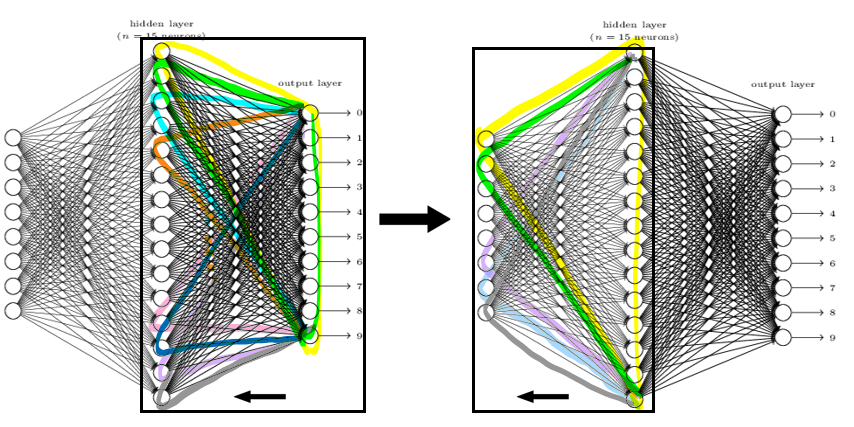
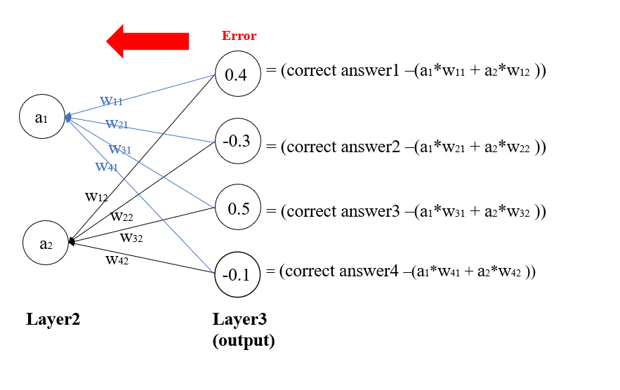
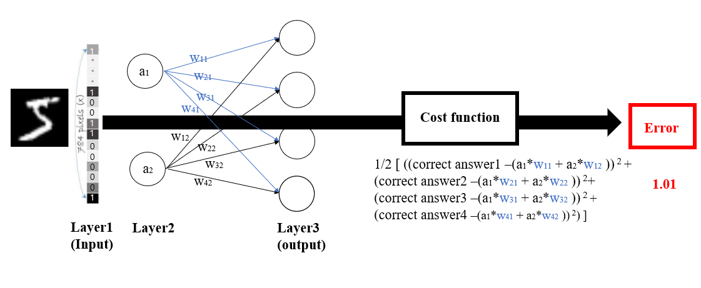
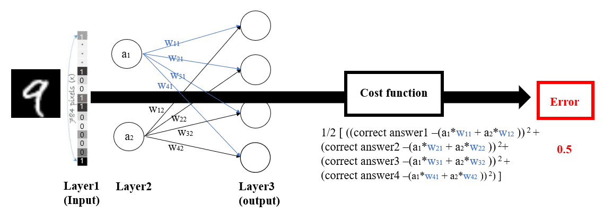
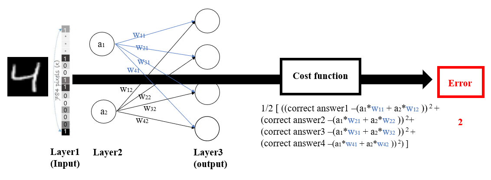
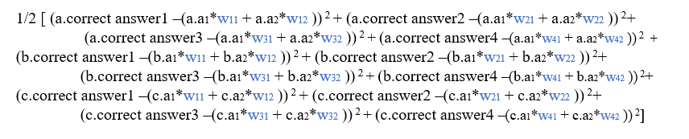
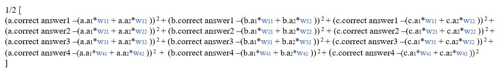

Back-propagation

Back-propagation is the process of neural network finding right weights.Depending on how much each node contributes to the total error.
we will focus on 1. How much error each node contributes 2. How much weight should be updated
Back-propagation starts from the nodes from the output layer. These nodes can be evaluated by seeing how different it is from the right answer, and this differences can represented with one number by using cost function(evaluation function)

Cost(errors) for this case = 0.255
Derived from cost function : 1/2 (Correct answer - Estimated answer)2
Add up all costs for this case.
1/2(0.4 2 + (-0.3) 2 + 0.5 2 + (-0.1) 2)
Let's assume we have 3 datas for training the Neural network. We want to evaluate if the model we currently have is good enough or not.
so using one model(same weights for every cases) , we can evaluate the performance of our model.
The pictures below show how it works. Weight does not change, but Input is different. so a1 and a2 from layer 2 have different number for each case.
There is 784 input nodes. The value of each input node represents as number 1 or 0, which is the information of brightness of pixel.

Input nodes can be [1,0,0,0,....1,1,1].
Correct answer is [0,0,0,0,0,1,0,0,0,0]

Input nodes can be [0,1,0,1,....0,0,1].
Correct answer is [0,0,0,0,0,,0,0,0,1]

Input nodes can be [0,0,0,0,....1,1,0].
Correct answer is [0,0,0,1,0,0,0,0,0,0]
By this, total errors that this model has is 3.51 (1.01 + 0.5 + 2). We want to minimize the errors. so weights making error less than 3.51 is what we are aiming for.
This can be found by derivative.
Let's name the picture 5,9,4 as a,b,c.
We can write equation which shows more detail. The equation is attached below. In this equation, Weights are variable, Things like a.a1, a.a2 , b.a1, b.correct answer are constants (The specific number). So what we need to focus on is weights which are written w11, w12.
Now let's focus on one variable "w11". How can we change w11? Should we increase the value or decrease?

We can rearrange this equation like the picture below. The cost function consists of weight variables.
y = Cost function(w11,w12, ....w41,w42)

y = cost function(w11,w12,...w41,w42)
purpose : minimize 'y' value
There is two posibility, wheter increase the w11 value or decrease. *delta is very small number.
1.cost function(w11 + delta,w12,...w41,w42) 2.cost function(w11 - delta,w12,...w41,w42)
If the 'y' value of case 1 is less than current value, this is the way to go, or it is more than current value, then the opposite way is what we should take.We can relate this to differentiation.

Moment slope = Deritives.
In this case, We want Moment slope to be negative.